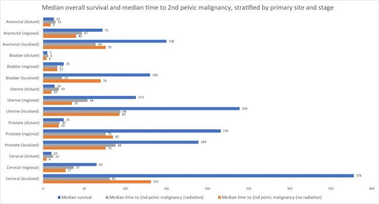
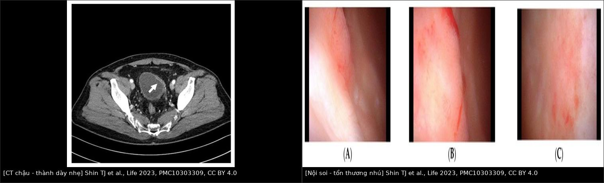
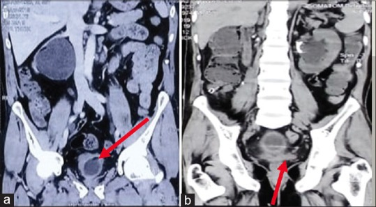
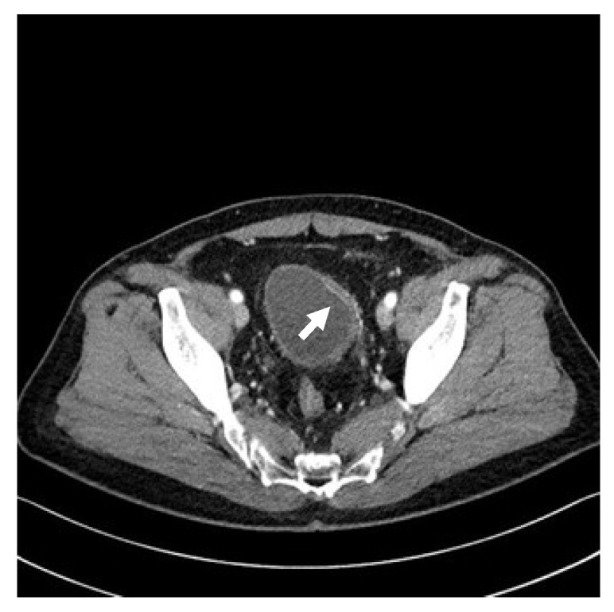

1608 — Ung thư niệu mạc thứ phát sau xạ trị tiểu khung / Secondary urothelial malignancy after pelvic radiotherapy
Tags: pattern:day-thanh-bang-quang pattern:u-bang-quang pattern:hep-nieu-quan vung:tieu-khung vung:bang-quang score:VI-RADS score:RTOG protocol:CTU protocol:mpMRI-bang-quang protocol:soi-bang-quang
Mức chắc chắn (certainty): tổng hợp y văn (literature synthesis) — số liệu đoàn hệ SEER (Europe PMC) + một ca nguyên văn minh họa (PMC10303309); không tự suy diễn ngưỡng ngoài nguồn.
Câu chốt: sau xạ trị tiểu khung, đái máu đại thể không bao giờ được mặc định là "viêm bàng quang xạ". Viêm xạ là chẩn đoán loại trừ; ung thư niệu mạc thứ phát là chẩn đoán phải loại trừ bằng nội soi. Thời gian tiềm tàng trung bình tính bằng năm–chục năm, nhưng ca thực tế có thể xuất hiện 6 tháng sau xạ — nên "mới xạ xong" không loại trừ ung thư.
1. Tổng quan bệnh học – cơ chế hình ảnh
- Sinh bệnh học: bức xạ gây đứt gãy chuỗi kép DNA trực tiếp + gián tiếp qua gốc tự do; biểu mô niệu (urothelium) có tốc độ tái tạo cao nên dễ tích lũy đột biến. Tổn thương mạch máu nhỏ kiểu viêm tắc động mạch tận (obliterative endarteritis) → thiếu máu mạn, xơ hóa, giãn mạch (telangiectasia), giảm đàn hồi thành bàng quang. Hai hậu quả song song: viêm bàng quang xạ (lành tính) và ung thư niệu mạc thứ phát (ác tính) — cùng một bối cảnh, cùng triệu chứng đái máu.
- Ngưỡng định lượng — nguy cơ (SEER):
- Đoàn hệ ung thư phụ khoa 123.476 ca (25,8% có xạ): tỷ lệ mắc tích lũy ung thư bàng quang thứ phát 1,59% (có xạ) vs 0,73% (không xạ); SIR 2,49 (KTC 95% 2,17–2,86) với xạ ngoài, 1,96 (1,60–2,38) với brachy, 2,73 (2,24–3,28) khi phối hợp; HR 2,83 (2,34–3,43) / 2,17 / 2,97 (PMC9162740).
- Ung thư trực tràng 74.646 ca: bàng quang thứ phát 1,85% vs 1,24%, SIR 1,35 (1,19–1,53) (PMC7868538).
- Toàn bộ ung thư tiểu khung 2.102.192 ca: cổ tử cung IRR 1,72 (1,59–1,86) cho ung thư tiểu khung thứ phát; thân tử cung 1,15; tuyến tiền liệt 1,42 — nguy cơ tuyệt đối vẫn thấp, nhưng cao nhất ở người sống lâu (ung thư cổ tử cung) (PMC10979055).
- Ngưỡng định lượng — thời gian: nghiên cứu SEER loại các ca sống < 5 năm vì coi 5 năm là thời gian tiềm tàng tối thiểu của u đặc; nguy cơ tăng rõ sau 10 năm và cao nhất sau 20 năm (PMC9162740). Ca nguyên văn (PMC10303309) lại phát hiện ung thư bàng quang 6 tháng sau xạ cứu vãn 66 Gy — phản biện bắt buộc: con số 5–20 năm là phân bố quần thể, không phải điều kiện chẩn đoán.
- Ngưỡng định lượng — viêm xạ (đối chứng lành tính): viêm bàng quang xạ muộn gặp ~18%, khởi phát 6 tháng – 20 năm; bàng quang co nhỏ, dung tích còn 60–80 mL trong loạt ca có hình (PMC10303309 dẫn Dautruche 2018; PMC9254857).

Đọc hình: thanh xanh = sống trung vị; thanh cam/xám = thời gian trung vị tới ung thư tiểu khung thứ hai, có/không xạ. Ở ung thư cổ tử cung khu trú, thời gian tới u thứ hai dài hơn sống trung vị — nghĩa là nguy cơ chỉ hiện thực hóa ở người sống đủ lâu. Đây là lý do theo dõi sau 5 năm vẫn phải nghĩ tới u thứ phát. Nguồn: McPartland C et al., Eur Urol Open Sci 2024, PMC10979055, CC BY 4.0.
- TẠI SAO hình ảnh khó — vật lý:
- CT: ung thư niệu mạc là mô giàu tế bào, ít mỡ, tỷ trọng mô mềm 30–50 HU, ngấm thuốc; nhưng thành bàng quang sau xạ cũng dày và ngấm mạnh do viêm/tái tạo mạch → độ dày thành một mình không phân biệt được. Thứ phân biệt là hình thái khu trú + nhú trong lòng + bất đối xứng lệch khỏi vùng xạ.
- MRI T2W: cơ detrusor là dải giảm tín hiệu; u là tín hiệu trung gian. Xơ xạ cũng giảm tín hiệu → mất dải cơ do xơ ≠ xâm lấn cơ (cạm bẫy).
- DWI/ADC: u tế bào đặc → DWI sáng, ADC thấp; nước tiểu ADC rất cao. Nhưng xơ hóa sau xạ cũng hạn chế khuếch tán → dương tính giả VI-RADS; phải đọc kèm T2W + DCE và vùng ngoài trường xạ.
- DCE: u tân mạch ngấm sớm; niêm mạc xạ viêm cũng ngấm → không đặc hiệu nếu chỉ có viêm lan tỏa.
2. Mẫu hình + chẩn đoán phân biệt theo vị trí (Gamut)
- Khuôn 1 — thành bàng quang dày LAN TỎA, đối xứng, bàng quang nhỏ, không khối trong lòng: viêm bàng quang xạ là hàng đầu; phân biệt viêm bàng quang do BCG/hoá trị trong bàng quang, tắc cổ bàng quang, thâm nhiễm (lymphoma, di căn).
- Khuôn 2 — dày thành KHU TRÚ hoặc nhú trong lòng, bờ không đều: ung thư niệu mạc thứ phát; phân biệt tái phát ung thư tiền liệt tuyến/cổ tử cung xâm lấn thành, cục máu (di động, không ngấm), sỏi (tăng tỷ trọng), nấm (hiếm, bối cảnh giảm miễn dịch).
- Khuôn 3 — hẹp niệu quản ± ứ nước: hẹp do xạ (đoạn dài, nhẵn, hình nón, không khối) vs ung thư niệu mạc niệu quản (khuyết thuốc ngấm, bờ không đều) vs sỏi (tăng tỷ trọng) — tam chứng kinh điển của "niệu quản sau xạ".
- Khuôn 4 — đái máu đại thể, CT sạch: CIS (carcinoma in situ) phẳng — không thấy trên CT, chỉ thấy khi soi + tế bào học; đây là lý do không bao giờ dùng CT để loại trừ.
- Gamut theo vị trí trong bàng quang: thành bên (ca nguyên văn — tổn thương nhú), tam giác/lỗ niệu quản (dễ giả u do VI-RADS khó đọc — PMC12800710), thành sau (CIS phẳng, đỏ lan tỏa), cổ bàng quang (dày do tắc, không phải u).
- Gamut theo thời gian: < 3 tháng** = viêm cấp (hiếm khi ung thư nhưng ca 6 tháng đã có); **6 tháng – 5 năm** = viêm xạ muộn là chính, nhưng ung thư vẫn có; **> 10 năm = ưu tiên loại trừ ung thư thứ phát.
3. Bảng so sánh phân biệt (ma trận đối chiếu)
| Thực thể (entity) | Hình ảnh điển hình | Chốt vào (rule-in) | Chốt loại (rule-out) | Gợi ý xác nhận |
|---|---|---|---|---|
| Viêm bàng quang xạ (muộn) | Thành dày lan tỏa, đối xứng, bờ ngoài nhẵn, không khối trong lòng; bàng quang co nhỏ (60–80 mL); giãn mạch niêm mạc | Dày lan tỏa + dung tích nhỏ + không nhú + đúng trường xạ | Có nhú/khu trú trong lòng → phải soi loại u | Soi bàng quang: niêm mạc đỏ, telangiectasia, không u |
| Ung thư niệu mạc thứ phát | Dày khu trú/nhú trong lòng, ngấm mạnh, DWI sáng/ADC thấp; có thể chỉ là dày nhẹ + ngấm niêm mạc mạnh (ca 1608) | Tổn thương khu trú + ngấm + DWI sáng ở người đã xạ | Dày lan tỏa đối xứng, không nhú → viêm xạ | Soi + TURBT sinh thiết (chuẩn vàng) |
| Tái phát ung thư tiền liệt tuyến/cổ tử cung | Khối liên tục với ổ nguyên phát, xâm lấn đáy bàng quang, ngấm đồng thì với u nguyên phát | Liên tục giải phẫu + cùng mô học | Tổn thương rời, trong lòng bàng quang → u niệu mạc | MRI chậu + PSA/histology |
| Cục máu | Khuyết thuốc/khối không ngấm, di động, thay đổi giữa các lần chụp | Không ngấm + đổi hình | Ngấm + cố định → u | CT lại sau rửa bàng quang |
| Hẹp niệu quản do xạ | Hẹp dài, nhẵn, hình nón, thành đều, không khối, ứ nước nhẹ–vừa | Nhẵn + dài + không khối + đúng trường xạ | Khuyết thuốc ngấm/bờ nham nhở → UTUC | CTU + tế bào học; soi niệu quản nếu nghi |
| UTUC (niệu mạc trên) | Khuyết thuốc ngấm, bờ không đều, stipple sign, ứ nước | Ngấm + stipple + tắc | Nhẵn, không ngấm, đổi hình → máu cục/viêm | CTU + tế bào học + ureteroscopy |

Trái: CT chậu có cản quang — thành bàng quang dày nhẹ, ngấm mạnh niêm mạc (mũi tên), không có khối lớn. Phải: nội soi cùng ca — (A,B) tổn thương nhú thành bên phải, (C) mảng đỏ lan tỏa thành sau. Ung thư niệu mạc thứ phát 6 tháng sau xạ 66 Gy. Nguồn: Shin TJ et al., Life (Basel) 2023, PMC10303309, CC BY 4.0. Ảnh ghép letterbox.Dấu hiệu chốt cần nhớ
- "Dày nhẹ + ngấm mạnh niêm mạc" vẫn có thể là ung thư — ca nguyên văn chứng minh; ngưỡng hành động là soi, không phải mm.
- Bàng quang nhỏ + dày lan tỏa = viêm xạ; bàng quang nhỏ làm giả dày thành nếu chụp khi chưa căng → luôn ghi dung tích ước lượng.
- Vị trí so với trường xạ: tổn thương trong trường xạ nghiêng về biến chứng xạ; tổn thương ngoài trường hoặc mới sau nhiều năm nghiêng về u thứ phát — nhưng không thay thế mô học.
- CIS phẳng = điểm mù của mọi modality mặt cắt.
4. Protocol chụp + hệ phân độ/điểm chuẩn hóa
- Bước 1 (bắt buộc) — soi bàng quang + tế bào học nước tiểu: chuẩn vàng; không có ngưỡng kích thước nào cho phép bỏ soi ở người đã xạ có đái máu đại thể. Tế bào học độ nhạy thấp với u độ thấp, nhưng cao với CIS/độ cao — âm tính không loại trừ.
- Bước 2 — CT urography (CTU): cắt ≤ 1–2 mm, bàng quang căng vừa, pha vỏ-tủy (corticomedullary) cho thành bàng quang + pha bài tiết (7–10 phút) cho đường niệu trên; kỹ thuật low-dose có thể giảm liều 80,2% (1,5 ± 0,3 mSv vs 7,6 ± 1,2 mSv) mà vẫn đọc được u bàng quang (PMC13017341). CTU đánh giá đường niệu trên + hạch + xương, không thay soi.
- Bước 3 — mpMRI bàng quang (VI-RADS) khi đã có chẩn đoán mô học và cần phân biệt cơ xâm lấn: T2W độ phân giải cao + DWI/ADC + DCE. Gộp 20 nghiên cứu / 2.477 ca: ngưỡng ≥ 3 cho Sn 0,87 / Sp 0,86; ngưỡng ≥ 4 cho Sn 0,78 / Sp 0,94 (PMC9237003). VI-RADS không dùng để phát hiện u ở người chưa soi.
- Cạm bẫy kỹ thuật VI-RADS sau xạ: thay đổi sau TURBT/BCG/xạ giả u trên DWI và DCE; lỗ niệu quản, tam giác, cổ bàng quang dễ chấm sai; tổn thương phẳng/nhỏ dễ bỏ (PMC12800710).
- Theo dõi: không có lịch tầm soát ung thư bàng quang thứ phát được chứng minh bằng thử nghiệm; dữ liệu SEER chỉ ra nguy cơ tăng sau 10 năm và cao nhất sau 20 năm → người sống sót sau xạ tiểu khung cần ngưỡng soi thấp với bất kỳ đái máu nào, kể cả vi thể tái diễn.
flowchart TD
A[Đái máu sau xạ trị tiểu khung] --> B[Soi bàng quang + tế bào học nước tiểu]
B --> C{Có tổn thương?}
C -->|Không, niêm mạc đỏ lan tỏa| D[Viêm bàng quang xạ - theo dõi, điều trị]
C -->|Có nhú/u| E[TURBT + mô học]
E --> F{Ung thư niệu mạc?}
F -->|Không| D
F -->|Có| G[mpMRI VI-RADS + CTU đánh giá đường niệu trên]
G --> H{Cơ xâm lấn / di căn?}
H -->|NMIBC| I[TURBT triệt để ± BCG, theo dõi nội soi]
H -->|MIBC| J[Cắt bàng quang tận gốc hoặc hoá-xạ bảo tồn]
D --> K[Đái máu tái diễn: soi lại, không mặc định viêm xạ]
5. Biến thể bình thường và cạm bẫy
- Cạm bẫy 1 — "viêm xạ dày thành bất đối xứng": viêm xạ có thể dày lệch và gây ứ nước do hẹp lỗ niệu quản — hình giống u xâm lấn (ảnh quiz ca 2). Chốt: thiếu khối trong lòng + bờ ngoài nhẵn + đúng trường xạ, và vẫn phải soi.
- Cạm bẫy 2 — chụp khi bàng quang chưa căng: thành giả dày, niêm mạc giả ngấm; luôn đánh giá dung tích trước khi kết luận dày thành.
- Cạm bẫy 3 — xơ xạ hạn chế khuếch tán: DWI sáng/ADC thấp ở mô xơ → VI-RADS dương tính giả; đọc DCE + T2W và so với vùng thành đối diện.
- Cạm bẫy 4 — "mới xạ 6 tháng nên chưa thể ung thư": ca PMC10303309 phản bác trực tiếp; thời gian không phải tiêu chuẩn loại trừ.
- Cạm bẫy 5 — nhầm tái phát u nguyên phát với u thứ phát: tái phát liên tục với ổ cũ, cùng mô học; u thứ phát rời, trong lòng, mô học niệu mạc. Điều trị khác hẳn → bắt buộc mô học.
- Cạm bẫy 6 — bỏ sót đường niệu trên: sau xạ, hẹp niệu quản do xạ che lấp UTUC đồng thời; CTU pha bài tiết + tế bào học, soi niệu quản khi nghi.
6. Tự lượng giá — Blind Quiz
Ca 1 — Nam 72 tuổi, đái máu đại thể không đau, 4 năm sau xạ trị ung thư tuyến tiền liệt. CT chậu có cản quang:

- Câu hỏi: Mô tả thành bàng quang? Có khối trong lòng không? Có ứ nước không? Ba chẩn đoán phân biệt và bước tiếp theo?
Bấm để hiện đáp án (findings + chẩn đoán)
- Dấu hiệu: (a) thành bàng quang dày bất đối xứng, bờ ngoài nhẵn, không có khối trong lòng; (b) ứ nước đường niệu trên do hẹp lỗ niệu quản.
- Chẩn đoán: viêm bàng quang xạ co nhỏ (dung tích 60–80 mL trong loạt ca) — nhưng đây là chẩn đoán loại trừ, phải soi bàng quang + tế bào học để loại ung thư niệu mạc.
- Vì sao dễ nhầm: dày lệch + ứ nước là hình ảnh của u xâm lấn; khác biệt nằm ở không có khối trong lòng và bờ ngoài nhẵn.
- Nguồn ảnh: Panwar VK et al., J Family Med Prim Care 2022, PMC9254857, CC BY-NC-SA 4.0 (nguyên bản, không chỉnh sửa).
Ca 2 — Nam 65 tuổi, đái máu đại thể không đau 6 tháng sau xạ cứu vãn 66 Gy/30 phân liều sau cắt tiền liệt tuyến; PSA < 0,01 ng/mL. CT chỉ thấy dày thành nhẹ:

- Câu hỏi: Có bất thường không? Nếu chỉ đọc CT này, bạn có thể kết luận "viêm xạ" không? Vì sao?
Bấm để hiện đáp án (findings + chẩn đoán)
- Dấu hiệu: thành bàng quang dày nhẹ, ngấm mạnh niêm mạc (mũi tên), không có khối lớn.
- Chẩn đoán: ung thư niệu mạc thứ phát — soi thấy tổn thương nhú thành bên phải + mảng đỏ lan tỏa thành sau; TURBT: CIS + ung thư nhú độ cao không xâm lấn. Sau đó phát hiện di căn xương lan tỏa.
- Phản biện (bắt buộc): đây là ca không điển hình về thời gian — ung thư xuất hiện 6 tháng sau xạ, trong khi SEER dùng mốc 5 năm làm tiềm tàng tối thiểu. Bài học: thời gian ngắn không loại trừ, và CT dày nhẹ không loại trừ.
- Nguồn ảnh: Shin TJ et al., Life (Basel) 2023, PMC10303309, CC BY 4.0.
Ca 3 — Nữ 68 tuổi, 12 năm sau xạ trị ung thư cổ tử cung, đái máu tái diễn 3 đợt/6 tháng. CTU: hẹp niệu quản trái đoạn 3 cm, nhẵn, ứ nước độ 2, không thấy khuyết thuốc:
- Câu hỏi: Hẹp do xạ hay UTUC? Cần gì để chốt? Khi nào phải soi niệu quản?
Bấm để hiện đáp án (findings + chẩn đoán)
- Hình ảnh: hẹp dài, nhẵn, hình nón, thành đều, không khuyết thuốc + đúng trường xạ → nghiêng hẹp do xạ.
- Nhưng: hẹp do xạ che lấp UTUC; cần tế bào học nước tiểu và soi niệu quản + sinh thiết nếu tế bào học dương/không giải thích được, hoặc hẹp tiến triển.
- Chốt: không có dấu hiệu ngấm/khuyết thuốc không loại trừ UTUC phẳng — nguyên tắc giống CIS bàng quang.
- Nguồn số liệu: PMC9162740, PMC10979055 (nguy cơ theo thời gian); hình thái hẹp xạ theo PMC582.
Bài liên quan chéo
- 159 – Bàng quang & đường niệu trên: VI-RADS, xâm lấn cơ & UTUC
- 582 – Biến chứng tiêu hóa–niệu sau xạ trị phụ khoa
- 146 – Huyết khối tĩnh mạch lách & nhồi máu lách
- 152 – Sỏi niệu
Ảnh
images/1608_CT-day-thanh-bang-quang_PMC10303309.jpg,images/1608_soi-bang-quang-nhu_PMC10303309.jpg,images/1608_viem-bang-quang-xa_CT_PMC9254857.jpg,images/1608_thoi-gian-ung-thu-thu-phat_PMC10979055.jpg,images/composite_bang-quang-day-thanh-vs-nhu.jpg.- Nguồn + giấy phép từng ảnh:
images/CREDITS.md. Không tải Radiopaedia/AuntMinnie.
Không dùng để chẩn đoán độc lập khi chưa có người hướng dẫn.